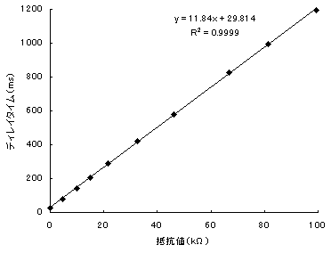
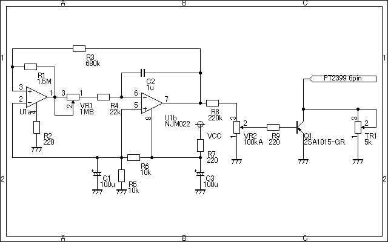

PT2399 Chorus
2009年01月04日 カテゴリー：実験等
この記事は2009年の古い記事で、現在ではPT2399の2番ピンを利用したコーラスがあります。ElectroSmash - PT2399 Analysisや別記事（Reincarnation Chorus）をご参照ください。（2021年8月23日追記）
Rebote Delayに使われているPT2399というディレイ専用のデジタルICがあります。これを使ってコーラスを作ってみようという案です。
コーラスは簡単に言うと「ディレイタイムを周期的に変化させるディレイ」です。単純にRebote DelayにLFO（Low Frequency Oscilｌator：低周波発振器）を入れてやれば出来そうな気がします。
DIYstompboxesというサイトでEcho Baseという同じ発想のエフェクターの回路図があったと思うので気になる人は探してみてください。
とりあえずブレッドボード上でPT2399のデータシートにある回路を組んでみました（ありあわせの部品なので多少値は違いますが）。でも低インピーダンスじゃないとダメみたいで前にバッファを入れます。そしてデータシートのように抵抗値とディレイタイムの関係を測定してみました（下グラフ）。

比例関係にあるのがわかります。Y軸切片からディレイタイムの最小値は約30msのようです。そこから5kΩごとに約60ms増えていく感じです。コーラスに使うにはギリギリのディレイタイムかもしれません。
抵抗値があまり0に近すぎるとノイズが入るようです。TONEPADではそこらへんを考えているのかも。あと、ディレイタイムを長くするほど、リピートを重ねるほどディレイ音が歪んできます。50kΩ（630ms）ぐらいが限度でしょう。
でLFOをつけてみます。LFOによる電圧の揺れを抵抗値の揺れに変換するわけですが、それにはトランジスタやフォトカプラが使えそうです（私もよくわかってないですが…）。
LFOはZombieChorusのを使ってみました。そしてEcho Baseに倣ってFET（2SK30ATM-GR）を使ってみました。するとコーラス音が出ました！しかしDepthのポイントがすごく狭いです（ほとんど一点）。
今度はフォトカプラ（TLP521）を使ってみました。やはりコーラス音は出るんですが、ポイントが狭いです。
どうやら結構シビアな調整が必要なようです。私はLFOのことを全くわかってないので、勉強してから再挑戦したいと思います。どうせなら変態的にしてみたいところです。
＜以上2008年4月8日、以下2009年1月4日追記＞
しばらく放置していましたが、Rebote Delay 2.5にEcho BaseのLFOをつけてみました。

トリマーを2kぐらいに合わせるとコーラス音が出ました。でもやっぱり普通のアナログコーラスの音のほうがいいです…トリマーなしでRebote Delay 2.5のディレイポットを使うとディレイ音にモジュレーションかかって怪しい音が出せますので、これはこれでよいかもしれません。
というわけで結局コーラスを作ることは失敗に終わりました。そのうちgarrettaudioで安く手に入るV3102とV3207を使って（できればMXRサイズで）コーラスを作ってみたいと思います。